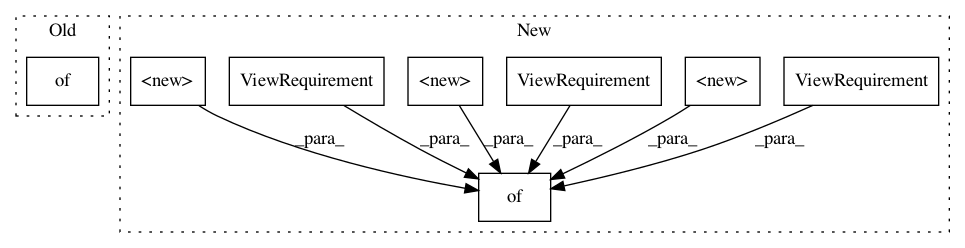

e968b52cb7de4e6c2fcc6e7d5ccb98d984745715,rllib/agents/ppo/ppo_torch_policy.py,,training_view_requirements_fn,#Any#,218
Before Change
def training_view_requirements_fn(policy):
return {
// Next obs are needed for PPO postprocessing.
SampleBatch.NEXT_OBS: ViewRequirement(SampleBatch.OBS, shift=1),
// VF preds are needed for the loss.
SampleBatch.VF_PREDS: ViewRequirement(shift=0),
}
PPOTorchPolicy = build_torch_policy(
name="PPOTorchPolicy",
After Change
def training_view_requirements_fn(policy):
return {
// Next obs are needed for PPO postprocessing.
SampleBatch.NEXT_OBS: ViewRequirement(SampleBatch.OBS, shift=1),
// VF preds are needed for the loss.
SampleBatch.VF_PREDS: ViewRequirement(shift=0),
// Needed for postprocessing.
SampleBatch.ACTION_DIST_INPUTS: ViewRequirement(shift=0),
SampleBatch.ACTION_LOGP: ViewRequirement(shift=0),
// Created during postprocessing.
Postprocessing.ADVANTAGES: ViewRequirement(shift=0),
Postprocessing.VALUE_TARGETS: ViewRequirement(shift=0),
}
PPOTorchPolicy = build_torch_policy(
name="PPOTorchPolicy",
In pattern: SUPERPATTERN
Frequency: 3
Non-data size: 8
Instances
Project Name: ray-project/ray
Commit Name: e968b52cb7de4e6c2fcc6e7d5ccb98d984745715
Time: 2020-08-21
Author: sven@anyscale.io
File Name: rllib/agents/ppo/ppo_torch_policy.py
Class Name:
Method Name: training_view_requirements_fn
Project Name: ray-project/ray
Commit Name: 36bda8432b2ed23f623c8c3031b2cba148bec93b
Time: 2020-10-01
Author: sven@anyscale.io
File Name: rllib/policy/policy.py
Class Name: Policy
Method Name: __init__
Project Name: ray-project/ray
Commit Name: e968b52cb7de4e6c2fcc6e7d5ccb98d984745715
Time: 2020-08-21
Author: sven@anyscale.io
File Name: rllib/policy/torch_policy.py
Class Name: TorchPolicy
Method Name: __init__